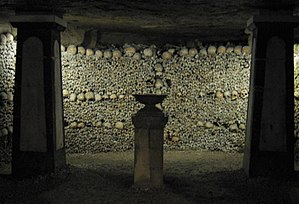

About!Home Map Food About |
The Catacombs of Paris (French: Catacombes de Paris, About this soundpronunciation (help·info)) are underground ossuaries in Paris, France, which hold the remains of more than six million people[2] in a small part of a tunnel network built to consolidate Paris' ancient stone quarries. Extending south from the Barrière d'Enfer ("Gate of Hell") former city gate, this ossuary was created as part of the effort to eliminate the city's overflowing cemeteries. Preparation work began not long after a 1774 series of gruesome Saint Innocents-cemetery-quarter basement wall collapses added a sense of urgency to the cemetery-eliminating measure, and from 1786, nightly processions of covered wagons transferred remains from most of Paris' cemeteries to a mine shaft opened near the Rue de la Tombe-Issoire. The ossuary remained largely forgotten until it became a novelty-place for concerts and other private events in the early 19th century; after further renovations and the construction of accesses around Place Denfert-Rochereau, it was open to public visitation from 1874. Since 2013, the Catacombs number among the 14 City of Paris Museums managed by Paris Musées. Although the ossuary comprises only a small section of the underground "carrières de Paris" ("quarries of Paris"), Parisians currently often refer to the entire tunnel network as the catacombs.  |